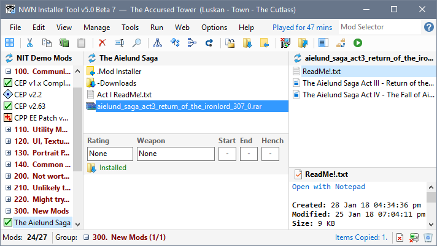
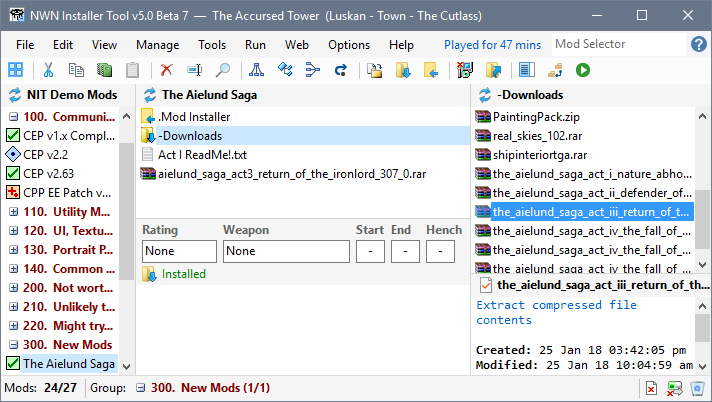
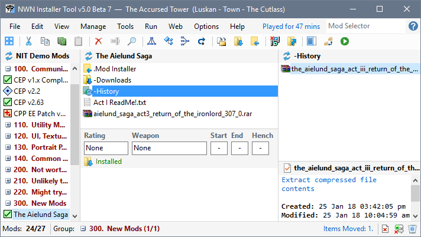
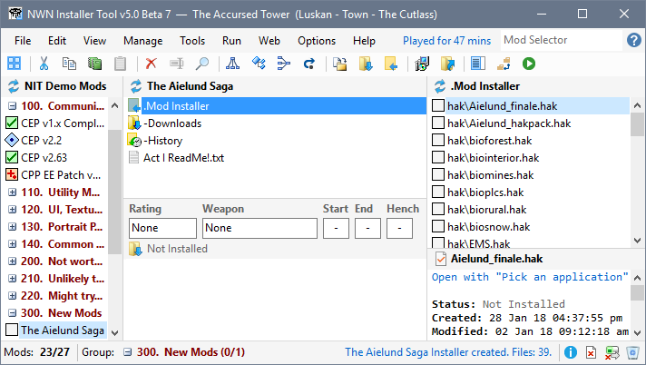

Authors upload new versions of their Mods periodically. This explains how to deal with these updates.
You can use Download Project from the File menu to download and install the updated files instead of performing the operation manually.
- Download updated Mod files.
- Select the Mod in the Mod list.
- Click Add Files to Mod from the File menu, select the downloaded files that have been updated and click Open.

- Select the old versions of the files you have added.

- Press Delete or click Delete from the Edit menu to remove the file.
Click Move to History from the File menu to retain the old version of the file.

- If you are using NIT's Downloads folder, click Update Mod Downloads from the File menu to move the updated files to -Downloads.
- Press Ctrl+L or click Create Installer from the Manage menu. If the Mod was installed prior to creating the Installer, it will be Uninstalled before the Mod Installer is created to avoid orphaned files in your Neverwinter Installation or User Files folder.

- The updated Mod is now ready for review and installation.
Related Topics
Download and install Neverwinter Vault Projects
Download and install Mods from other sites
Add a new Mod
Record a Mod's Web Page Link
Add downloaded files to a Mod
Reduce file clutter
Review Mod information in added files
Create Mod Installers
Customise Mod Installers
Manage Mod file conflicts
Install Mods
Uninstall Mods
Deal with Mod updates
Make Mod notes and record information
Publish Mods
Add Mods from downloaded files
Surazal's Mod notes